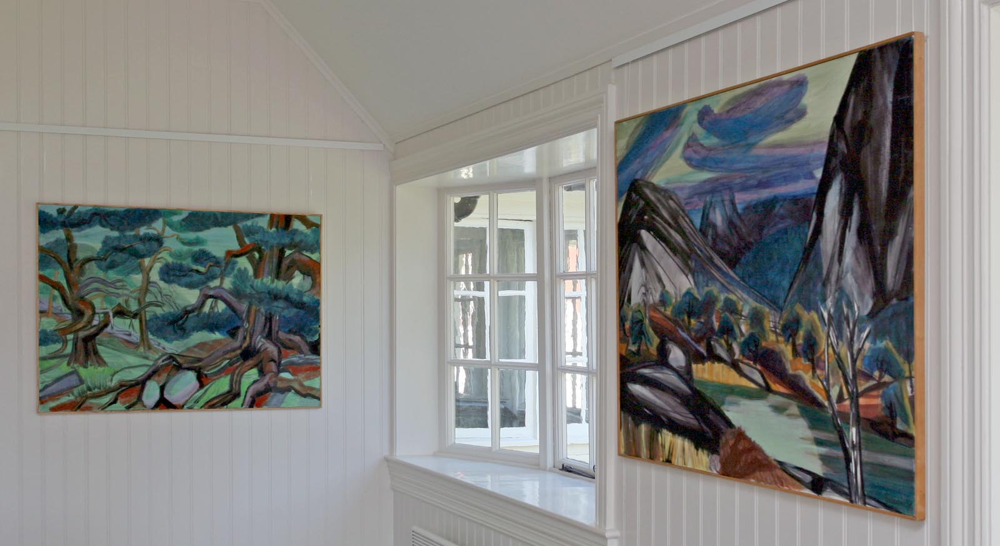
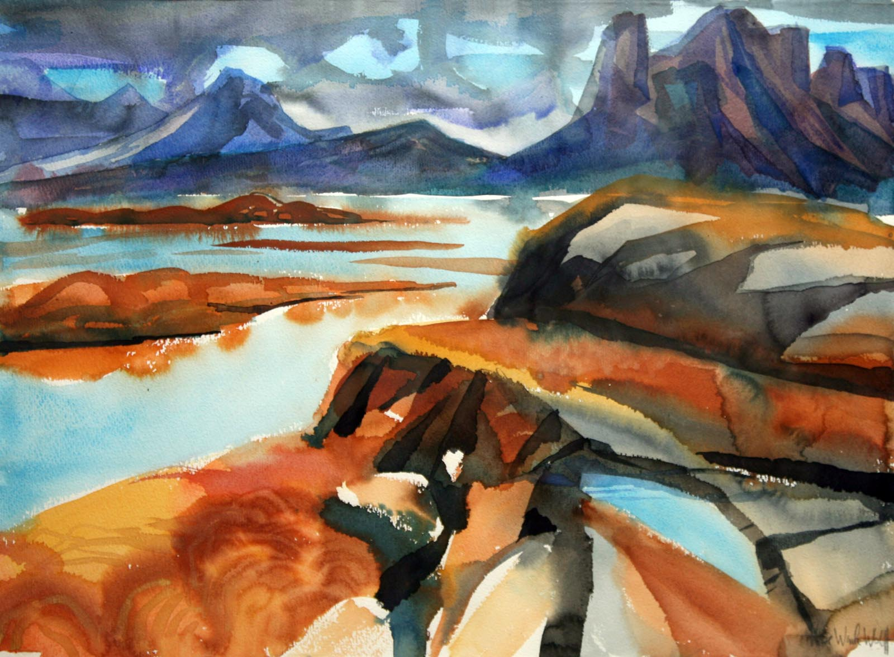
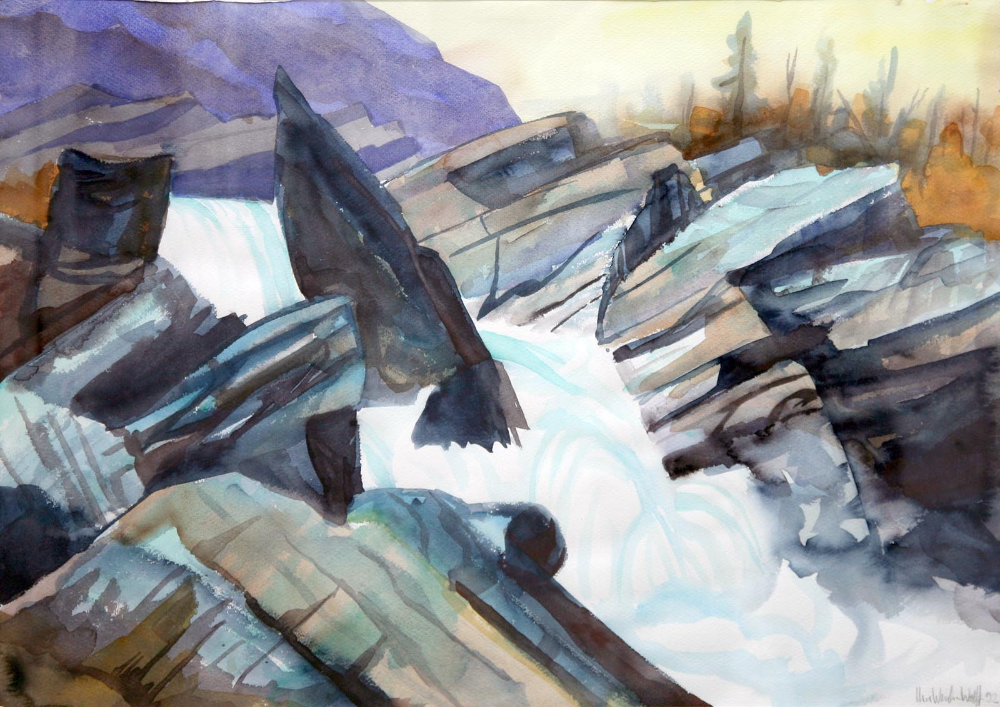
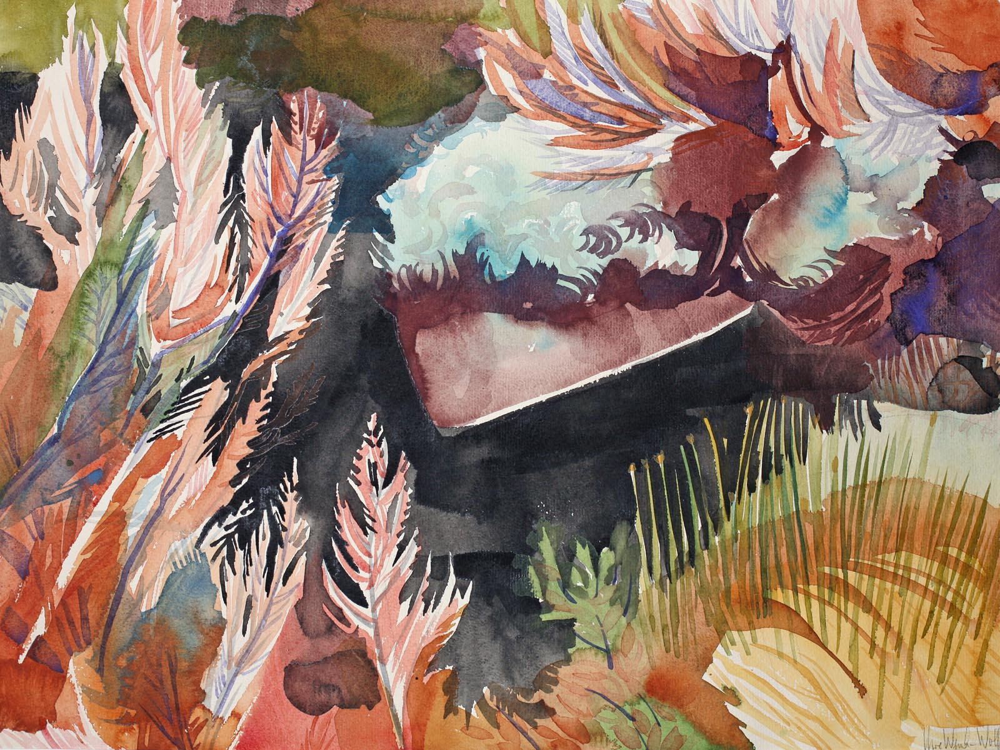
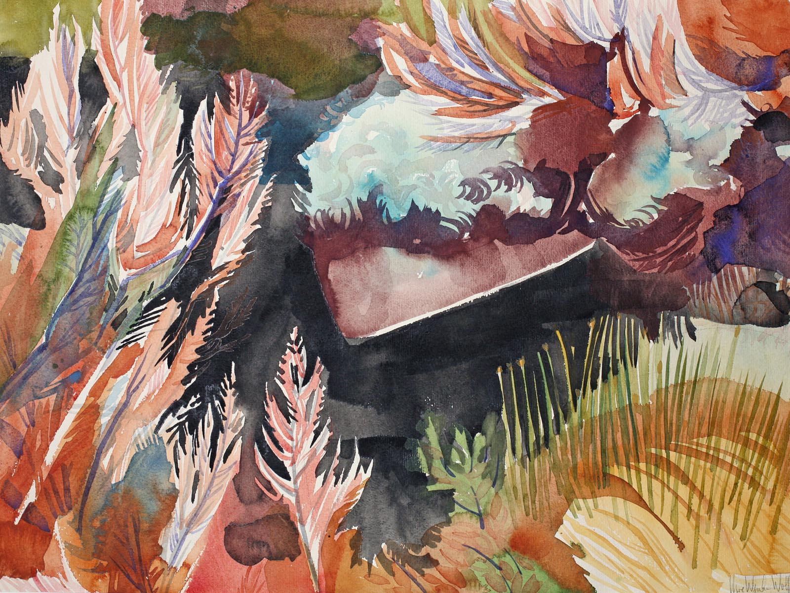
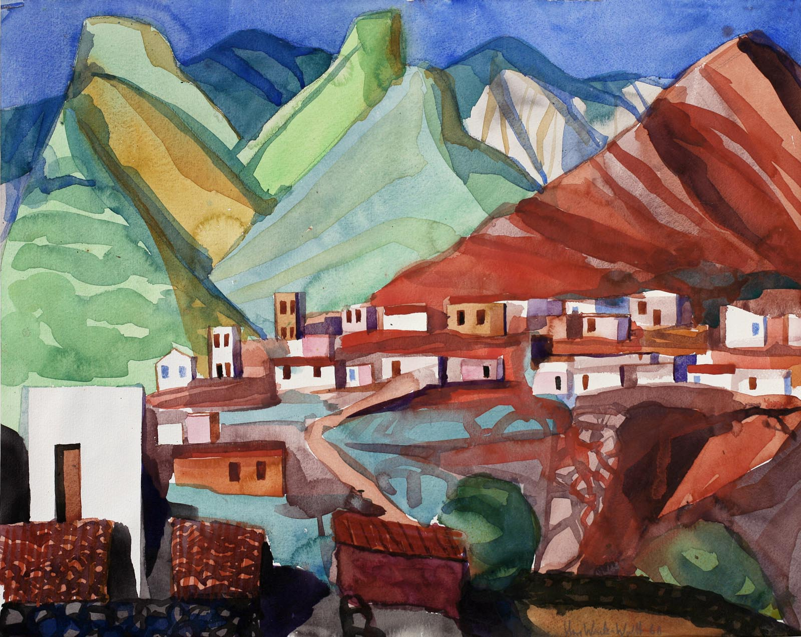
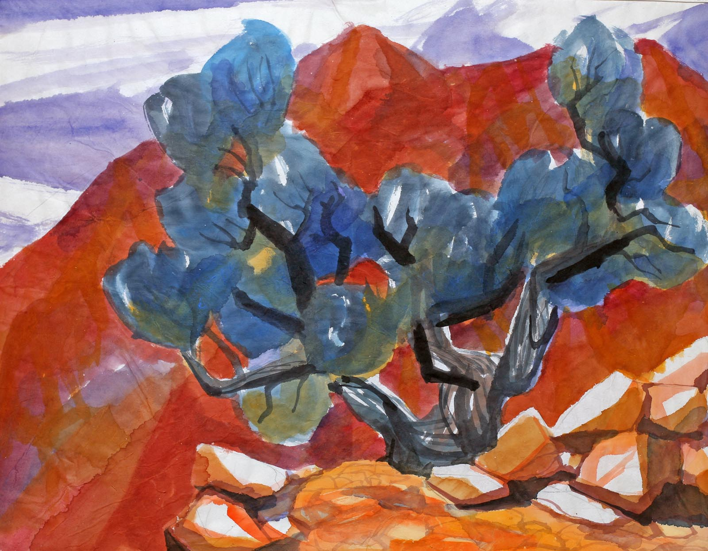
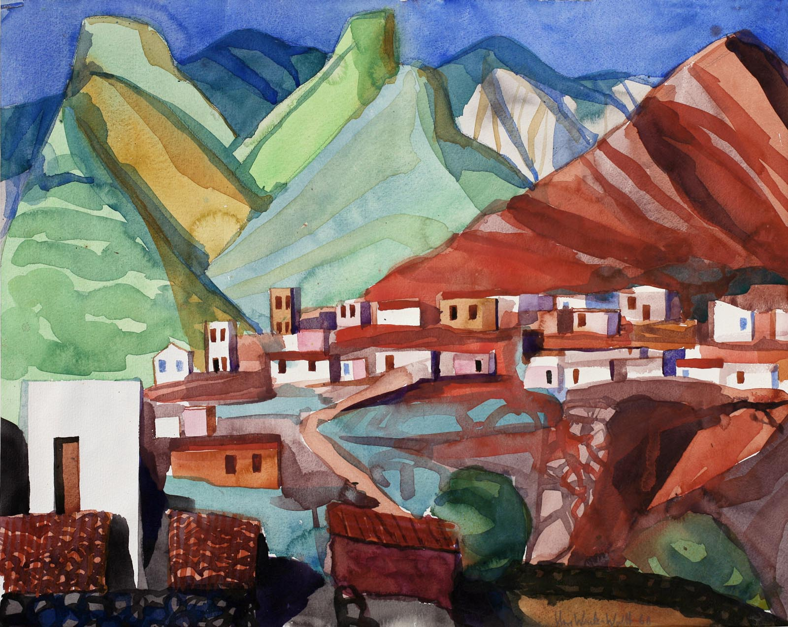
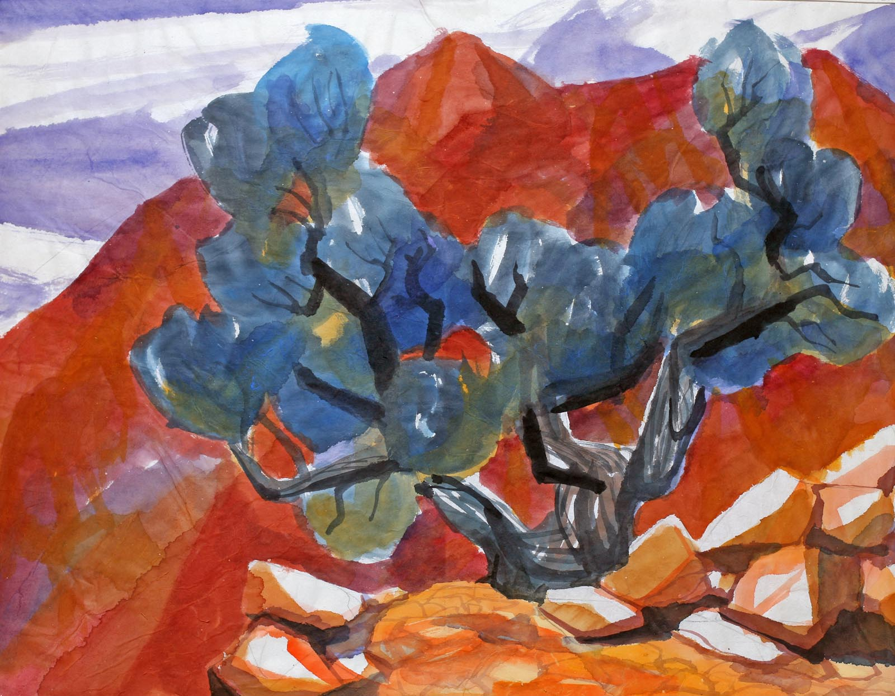

Uwe Wenk-Wolffs bilder
Fra Uwe Wenk-Wolffs 80 års jubileumeutstilling, Risøbank 16.07.09 til 09.08.09, pluss andre av hans akvareller.
Foto: Torvald Slettebø, Universitetet i Agder, Seniorsenteret
Uwe Wenk-Wolff født 26. juli 1929 i Mannheim, død 14. november 2009. Har bodd på Goksem, Lindesnes siden 1964. Var gift med kunstner Urd von Hentig, og de hadde barna Erl f. 1957, Ragin f. 1958, Urs f. 1961, Veit f. 1963 og Dagny f. 1965. Fylte 80 år 26. juli i år og hadde i den forbindelsen en jubileumsutstilling på Risøbank i Mandal.
Se også hjemmesiden urd-uwe.com
Jens Vetlands forord i Uwe Wenk-Wolffs katalog Werkverzeichnis 1946-1992
Det var ingen tilfeldighet at den tyskfødte billedkunstneren Uwe Wenk-Wolff slo røtter i den norskeste av alle norske landskap, så nær sydspissen og Lindesnes fyr som mulig. For ekspresjonisten fra Mannheim, med akademibakgrunn fra Diisseldorf og Miinchen og sterke ungdomsopplevelser fra den tyske ekspresjonistgenerasjonen, var det norske landskapet barskere, mer utfordrende og rikere enn det han hadde opplevd i Italia og på Kanariøyene.
Wenk-Wolff er en bevist billedbygger med et særpreget koloristisk språk. Han har en reflektert holdning til sine motiver, flytter elementer fra den ene skissen over i et større format, og arbeider seg bevisst fram mot en syntese av sine sanseintrykk. Det er en nøye sammenheng mellom arbeidene fra den første Norges-reisen i 1954 til de siste akvarellene og maleriene fra hans hånd. Wenk-Wolff er gjennom årene blitt stadig mer bevisst, motivene er enklere, fargebruken sterkere og mer uttrykksfull. Et eksempel er «Høst i dalen», katalognr. 92006. Det er etter min oppfatning et fulltonende uttrykk for det Wenk-Wolff står for i dag i sin landskapskunst. Det kan nevnes flere andre arbeider hvor form og farge går opp i en organisk enhet. Men for meg står dette bildet og en del andre som et eksempel på den utviklingen kunstneren har gjennomlevd siden han i 1964 slo seg ned på Goksem i Lindesnes sammen med sin kone Urd von Hentig og familiens barn.
Uwe Wenk-Wolff er til tross for sine mange år i Norge ikke blitt en norsk maler, selv om han er representert i norske gallerier og stadig stiller ut i kunstforeninger i sitt nye fedreland. Han bærer med seg sin arv fra Mannheim og Heidelberg. Det ekspresjonistiske maleri som han møtte i tiden umiddelbart etter krigen, er stadig en lenke i hans erfaringsbakgrunn.
Hvert enkelt bilde betyr noe for ham, og det betyr noe for tilskueren. Når man har sett et bilde av Wenk-Wolff og ser det igjen etter mange, mange år, er gjenn-kjennelsen sterk, fordi han er ekte i sin opplevelse, i sin billedbygging og sitt fargespråk.
I norsk kunstliv, og ganske spesielt i sørlandsk kunstnermiljø, er Wenk-Wolff en berikelse fordi man gjennom hans arbeider opplever det overraskende, at han iakttar våre motiver og vårt landskap på ny måte, Ikke som en fremmed fugl, men fordi han føyer til nye trekk som vi ikke har sett. Det er noe grunnleggende solid i hans kunst, både i akvarellene, maleriene og grafikken. Det har sammenheng med klassisk skolering, ikke minst hans tegneferdighet, evnen til å se og til å arbeide seg fram mot det uttrykket han søker i bildet. Enten det dreier seg om et nord-norsk motiv, en same i sin fargerike drakt eller det vi gjerne betegner som en sørlandsk idyll fra traktene omkring Lindesnes.
Jeg har fulgt Uwe Wenk-Wolff siden han kom til Lindesnes sammen med sin familie, fulgt hans utstillinger, og gledet meg over hans dekorative arbeider i sin nye hjemkommune. Det er blitt mange rike arbeidsår. Det jeg beundrer mest hos ham er hans konsekvens, hans uavkortede ærlighet som kunstner, og som nordmann - ikke minst hans kjærlighet til norsk natur og menneskene omkring ham. Han er ekte - som venn og medmenneske. Og han er for oss som arbeider med bildende kunst på kritikersiden, en formidler av de strømninger man ser i europeisk kunst. Både fra sin egen akademitid i Tyskland og til de mange nye uttrykk hos kunstnere fra forskjellige øst-europeiske land. - Jens Vetland
   


 



En fattigere palett
Uwe Wenk-Wolff er død. Etter lengre tids sykdom gikk han bort 14. november, og regionen er et helt fargespekter fattigere.
Av Dag Lauvland/Lindesnes (Tekst og foto)
Lindesneskunstneren Uwe Wenk-Wolff døde natt til søndag, etter lengre tids kreft. Én av de siste gangene vi fikk snakke med ham var i anledning jubileumsutstillingen på Risøbank i juli. For 26. juli fylte Wenk-Wolff 80 år. Da hadde kreften spredd seg, og han hadde en lang rekke behandlinger i vente. Det var påvist flere metastaser på skjelettet og usikkerheten rundt egen helse i tiden for utstillingen var reell nok. – Men jeg har hatt et langt og godt liv. Bruker ikke energi på å være redd, sa han da.
Skapelsen
Han ble født i Sør-Tyskland 26. juli 1929, i en by svært hardt rammet av de alliertes bombeangrep under krigen. I Mannheim ble Uwe Wenk-Wolffs barneår preget av den stadige redselen for nye flyangrep. – Jeg husker min far forsøkte å berolige oss når vi hørte de skremmende hylene av bomber som ble sluppet. Lydene ble, på absurd vis, vår sikkerhet. Skulle vi selv bli truffet, ville vi nemlig aldri få noen forvarsel. Dette ble mitt første møte med virkelig dødsangst. I 1943 flyktet vi til Heidelberg, 20 kilometer unna. Det fantes lite igjen av Mannheim da, har Wenk-Wolff fortalt oss tidligere.
Møtte Norge
Som barn av den tyske ekspresjonistgenerasjonen, med akademibakgrunn fra Düsseldorf og høyskole for bildende kunst i München, så han takknemlige utfordringer i den norske naturen. I 1954 kjørte han motorsykkel fra Sør- til Nord-Norge. En, på alle måter avgjørende tur for Wenk-Wolff. Den voldsomme naturen og de store ubebodde områdene var noe annet enn naturopplevelsene fra Tyskland. – I Norge var det som om selve skapelsen nettopp hadde funnet sted, sa han i et intervju med Lindesnes i 2004.
Så dypt inntrykk gjorde turen at han 10 år senere tok med seg hele familien, med sin kona Urd og fire barn til Norge for å bosette seg her. 24. juli 1964 kom familien på seks i en Citroën 2CV. Wenk-Wolff hadde blitt kjent med en norsk kjemistudent i Tyskland, Bjarne Hartmark. Og via ham fikk han i Norge kontakt med folk som kunne hjelpe familien med sted å bo. Så, i 1965 ble den yngste jenta, Dagny født hjemme på Goksem.
Hans andre hjem
I Heidelberg hadde Uwe og kona Urd en bolig, hvilket var svært praktisk, for oppholdene i Heidelberg og Tyskland var mange. Wenk-Wolff anslo selv at rundt 60 prosent av produksjonen gikk til det tyske markedet. Dette samsvarer også med det enorme antallet utstillinger han hadde, i henholdsvis inn- og utland. Om lag 70 utstillinger har det vært siden 1955, separate eller sammen med Urd.
Vil bli savnet
Leder i Mandal kunstforening, Torborg Bækholt mener Wenk-Wolffs bortgang representerer et stort tap for hele regionen. – Vi hadde jo mye kontakt med ham, spesielt rundt denne siste utstillingen i sommer, da han jo også var klar over at han var syk. Så dette blir et stort savn. Han har også betydd enormt mye for kunstforeningen, som han hadde et stort hjerte for, og var en viktig organisasjonsbygger for. Han kommer til å bli husket som en stor kunstner og et godt menneske. Og vi vil helt klart minnes han med glede, sier Bækholt. – Dere har også flere verk av ham i egen samling? – Vi har fire verk, henholdsvis snitt og akvarell. «Ved elvemunningen», «I skjærgården», «Fjellknausen» og «Landskap fra Imsøy». Et av disse henger ved eldresenteret, to på Blomdalen skole, og et på Vigeland hus.
Bedre før
Uwe Wenk-Wolff uttalte før utstillingen i sommer, det som kan stå som betegnende for både den ydmyke, men også svært direkte mannen. Det var da vi ba ham karakterisere sin egen kunstneriske utvikling gjennom årene. – Jeg var definitivt best da jeg var mellom 30 og 40 år. – Det høres da noe trist ut? – Nei da. Det er viktig å kunne være selvkritisk. – Er du noen gang 100 prosent fornøyd med det du har gjort? – Er som regel misfornøyd. Forestillingen jeg har er alltid mye mer vidunderlig enn det jeg makter å uttrykke. Men det har nok skjedd at jeg har vært tilfreds, skjønt, det kan jo like gjerne være uttrykk for et skikkelig selvbedrag, sa Uwe.